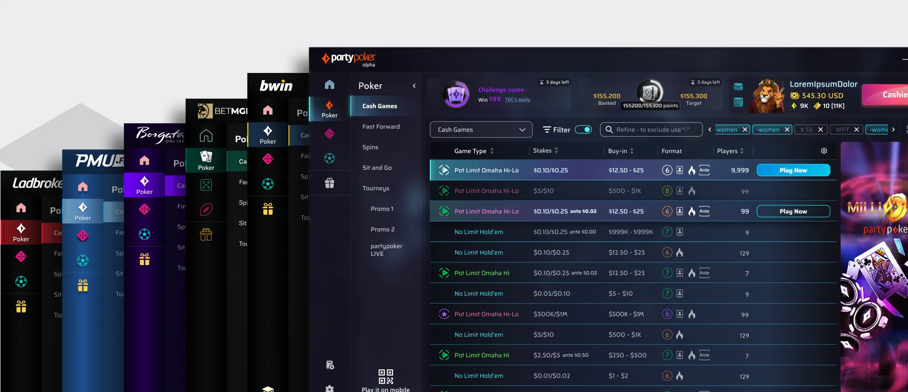
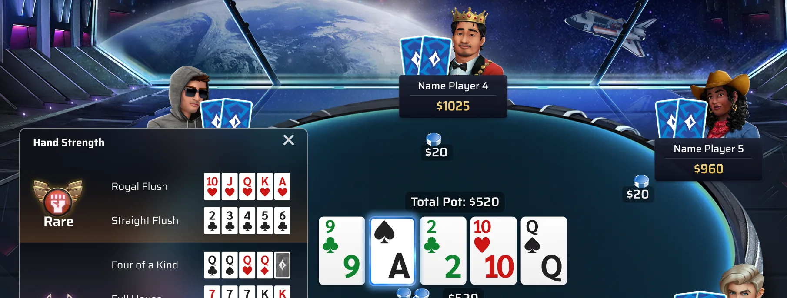
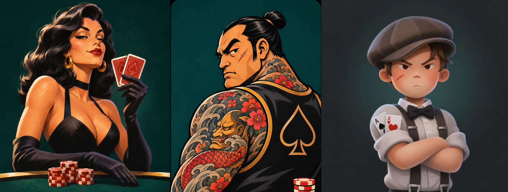
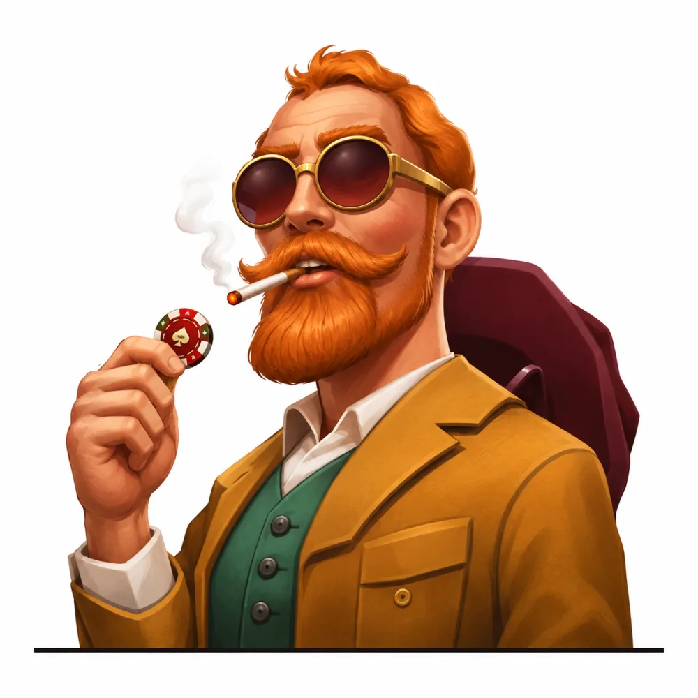
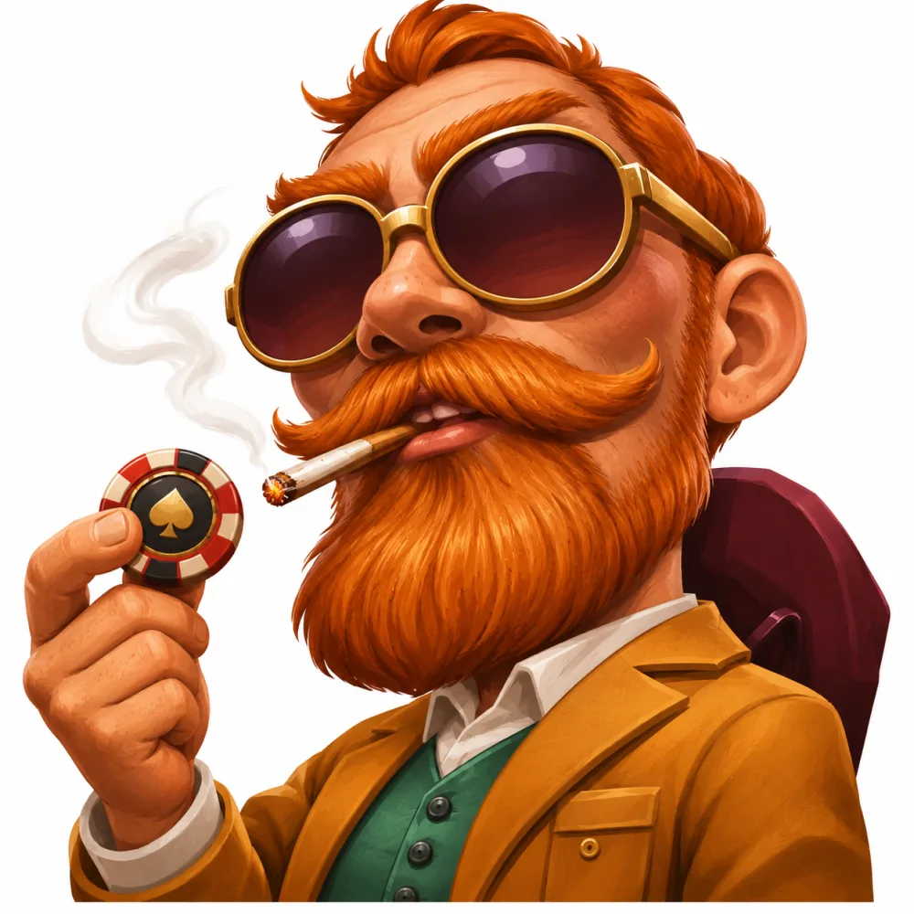

A design system for a poker game
I created the poker design system from scratch for 6 brands. A poker client is a game, so its parts were cards, decks and player plates, not only buttons and inputs.
- Team
- 9 designers, 1 researcher, 1 UX writer
- Brands
- 6 poker brands
- Game parts
- Cards, decks, player plates
- My role
- Created, supervised, maintained

Situation
Poker is a game, not a form
A standard design system covers buttons, inputs and lists. A poker table also needs cards, decks and player plates, and they must work on every brand.
Task
One system for 6 brands
There was no system to start from. I had to create one, and keep it working for every brand as the product grew.
Complexity
Not an ordinary design system
Most design systems theme colour, type and radius. This one also themed heavy graphics, and every graphic had to work in all 6 brands.
An ordinary system themes
- Colour
- Type
- Radius
- Spacing
- Icons
This system also themed
- Tables and felt
- Background art
- Card faces
- Card backs
- Chips
- Player plates
- Avatars
- Turn timer
- Bet controls
- Hand rankings

Action
Three things I did differently
Treat game objects as components
Cards, decks and player plates became components with variants, in the same way as a button.
Supervise, then maintain
I supervised the designers who built on the system, and I kept it maintained as brands and features changed.
Let players shape the parts
Casual players wanted better avatars, but product pushed back on a realistic set. We tested it, and it shipped.
Cost: we gave up the avatar look the industry knew.
The poker industry

What other poker apps gave players, illustrated: hypersexualised women, characters judged by their look and childlike cartoons. We wanted to change this, so we tested a different set with players.
Our UX research test
20 of 24


players chose our realistic, diverse avatars over the cartoon version
In their words
“I use a man (avatar). I think you can be looked down upon as a woman.”
Learned
Measure the system from day one
I did not measure how much faster the poker system made the team. At Entain's next system I did: design tasks got 56% faster.